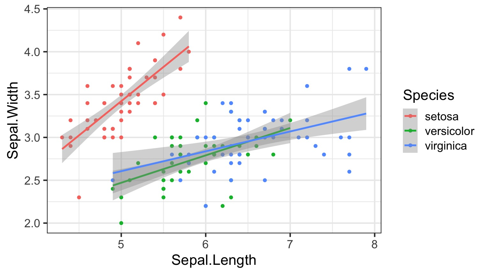

Jarrett Byrnes
UMass Boston
https://biol609.github.io/
Second, Some Old Technology

- Green: Party on, Wayne
- Red: I fell off the understanding wagon
- Blue: Write a question/Other
Outline for Today
Who are you?
How will this course work?
What are we doing here?
Review of generalized linear modeling techniques so far
Who are You?
Name
Lab
Brief research description
Why are you here?
Outline for Today
Who are you?
How will this course work?
What are we doing here?
Review of generalized linear modeling techniques so far
Lecture and Lab
- 1 Hour Lecutre on Concepts with code
- 1/2 Hour work on problem
- Occasional Paper/Chapter Discussion
The Book: Statistical Rethinking

Outline for Today
Who are you?
How will this course work?
What are we doing here?
Review of generalized linear modeling techniques so far
Model-A-Palooza
Objective 1) To learn how to think about your study system and research question of interest in a systematic way and match it with a realistic process-based model.
Enter The Reverend
Objective 2) To understand how to build and fit hierarchical/multilevel models in a likelihood and Bayesian framework.
The Rest of Your Life
Objective 3) Provide the grounding needed to effectively collaborate with statistical experts.
Objective 4) Allow students to gain the knowledge necessary to become life-long learners of data analysis techniques, able to incorporate new techniques into their analytic toolbelt as needed.
Modeling So Far: General Linear Models
\[\boldsymbol{Y} = \boldsymbol{b X} + \boldsymbol{\epsilon}\]

Foundational Modeling Approache
What is your data generating process?
What is your error generating process?
Foundational Philosophical Approaches
- Frequentist Inference: Correct conclusion drawn from repeated experiments
- Uses p-values and CIs as inferential engine
- Likelihoodist/Information Theoretic Inference: Evaluate the weight of evidence for different hypotheses
- Derivative of frequentist mode of thinking
- Uses model comparison (sometimes with p-values…)
- Bayesian Inference: Probability of belief that is constantly updated
- Uses explicit statements of probability and degree of belief for inferences
Two Foci of the Course
Funky Error Structures
Bayesian Inference and the Freedom it Brings for Process-Based Models
Outline for Today
Who are you?
How will this course work?
What are we doing here?
Review of generalized linear modeling techniques so far
Multiple Linear Regression
Categorical Predictors and ANOVA
Generalized Linear Models